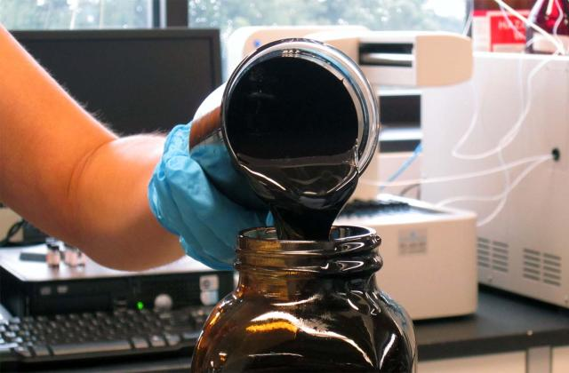

É a técnica de reciclagem química que faz uso da alta temperatura para tratar o material e produzir metais puros, ligas ou componentes intermediários. Uma das etapas de transformação química utilizadas é a pirólise decomposição pela ação do calor em um ambiente com pouco ou nenhum oxigênio. Os produtos podem ser recuperados e reutilizados no próprio processo de pirólise.
